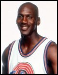
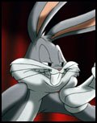
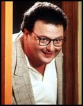
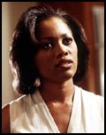
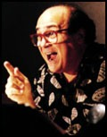

No, his real name isn't Newman.
MICHAEL JORDAN,who appears as himself, makes his motion-picture feature debut with "Space Jam." Widely considered the greatest basketball player in history, he has parlayed an incredible college and professional career with the North Carolina Tar Heels and the Chicago Bulls into a position as an American icon and one of the most recognized personalities, sports or otherwise, in the world.
Jordan's list of basketball accomplishments is unparalleled in the history of the sport: member of North Carolina's NCAA championship team in 1982 and Atlantic Coast Rookie of the Year; NCAA player of the year and All-American in 1983 and 1984; co-captain of the United States' gold medal-winning team in the 1984 Olympic games; NBA Rookie of the Year and scoring leader in 1985; NBA's Most Valuable Player in 1988, 1991, 1992 and 1995; second NBA player in history to score more than 3,000 points in a season; member of 10 NBA All-Star teams; NBA's scoring leader for eight seasons, seven consecutively; holder of the league's best career scoring average -- 32.3 points per game; member of the "Dream Team" that won the 1992 Olympic gold medal; earned NBA Finals' MVP honors in each of the Bulls' championship seasons: 1991-93, 1996; named to the NBA All-Defensive team seven times; voted 1988 NBA Defensive player of the Year; selected for the All-NBA first team eight times; named NBA ALL-Star Game MVP in 1988, 1996; and scored NBA playoff record 63 points vs. Boston in 1986.
Jordan retired from professional basketball shortly after his Fathers' death in 1993 to concentrate on a career in professional baseball. After playing one season with the Chicago White Sox AA affiliate, the Birmingham Barons, Jordan rejoined the Chicago Bulls and, in the 1995-96 season, led his team to another NBA championship, won the league's scoring title, and was again named Most Valuable Player of the Year and of the NBA All-Star Game.
BUGS BUNNY (as himself) received an Academy Award for his work in the 1958 theatrical short, "Knighty-Knight Bugs," and has been nominated for Oscars three more times. He is the star of more than 175 animated shorts, has starred in four full-length television specials and 14 CBS primetime specials. An American icon, Bugs Bunny serves as a contant reminder that to survive in today's world, one has to be shrewd and cool when under stress. In short, Bugs is the superstar of the Looney Tunes family -- an appropriate match for his superstar co-star, Michael Jordan.
WAYNE KNIGHT (Stan Podolak) is probably best known for his role in the blockbuster "Jurassic Park," as well as for his recurring part as Newman, Jerry Seinfeld's postal carrier neighbor on the hit NBC series "Seinfeld." However, his career encompasses a long list of film, television and stage appearances.
Knight made his motion picture debut in "Dirty Dancing" and has since appeared in such films as "Betrayed," "Everybody's All American," "Born On the Fourth of July," "Dead Again," "JFK," "V.I. Warshawski," "Basic Instinct" and "To Die For."
He has appeared off-Broadway in Shakespeare's "Measure For Measure" and in Broadway productions of "Gemini" and "Mastergate."
In addition to his role on "Seinfeld," Knight also appeared in the pilot for "Middleman" for NBC.
THERESA RANDLE (Juanita)'s list of credits spans feature films, television and the live stage. Her film debut, in "Maid to Order," was followed by such features as "The Guardian," "King of New York," "The Five Heartbeats," "CB4," "Sugar Hill," "Beverly Hills Cop III," "Bad Boys" and three films for director Spike Lee: "Jungle Fever," "Malcolm X" and "Girl Six."
Television credits include appearances on "A Different World" and "The Seinfeld Chronicles," both for NBC.
Randle has appeared onstage in productions of "In Command of the Children" for the Grand Theatre, "Sonata" at the Theatre of the Arts, "6 Pieces of Musical Broadway" at the Dorothy Chandler, and "Fight the Good Fight" for the LA Cultural Center.
DANNY DeVITO (voice of Swackhammer) is one of the most diversely successful talents in Hollywood. An award-winning film, stage and television actor, as well as a writer, producer and director who has earned popular and critical acclaim, DeVito pursues a career as busy as it is varied. In addition to his voice work on "Space Jam," will soon be seen in "Hercules," "Mars Attacks!" and "L.A. Confidential." He is currently in production for Francis Ford Coppola in "Rainmaker."
DeVito increased his repertoire and visibility with a starring role in the long-running hit TV series "Taxi," and also starrred in the series "All That Glitters." However, his greatest achievements have been in the world of movies, where his credits include "One Flew Over the Cockoo's Nest," "Terms of Endearment," "Romancing the Stone," the telefilm "The Ratings Game" (which marked his directing debut),"The Jewel of the Nile," "Ruthless People," "Tin Men," "Throw Momma From the Train" (which he also directed), "Twins" (for Ivan Reitman), "The War of the Roses" (which he also directed), "Other People's Money," "Batman Returns," "Hoffa" (which he also produced and directed), "Jack the Bear," "Rennaissance Man," "Junior" (again for Ivan Reitman), "Get Shorty" (which he also produced), "Matilda" (which he also produced and directed) and the upcoming "Hercules," "Mars Attacks!" and "L.A. Confidential."
DeVito is a founding partner in Jersey Films, which has produced "Reality Bites," "Eight Seconds," "Pulp Fiction" (which received the Palme d'Or at the 1994 Cannes Film Festival and seven Academy Award nominations), "Sunset Park" and "Feeling Minnesota," as well as the films noted earlier.
A native of New Jersey, DeVito attended the American Academy of Dramatic Arts and began his career on stage in 'The Man With the Flower in His Mouth," which was followed by plays including "The Shrinking Bride" and "One Flew Over the Cuckoo's Nest." He was later asked by producer Michael Douglas to re-create his "Cuckoo's Nest" role in the film of the same name, which brought DeVito his first national recognition.